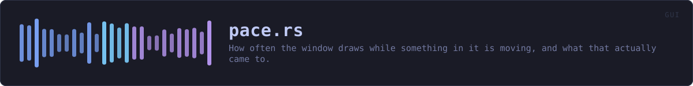

crates/veilvoice-gui/src/pace.rs
veilvoice-gui · 489 lines · read the source here · or on GitHub
How often the window draws while something in it is moving, and what that actually came to.
The number this replaces
The animations ran at twenty frames a second by design. The mark in the header carried its own constant, the busy path asked for a frame every fifty milliseconds, and the veiling path every sixteen. Each was a reasonable number on its own, and together they meant that on any display somebody had bought in the last five years the window moved at a fraction of the display's rate, with the busy path visibly juddering against the mark beside it.
Sixteen milliseconds is the interesting one. It is the number everybody writes for sixty a second, and it is wrong for a window that waits for the display: a display at sixty draws every 16.67 ms, so a request for a frame "no later than sixteen milliseconds from now" wakes the loop just after the frame it could have joined and the drawing lands on the one after. That is thirty a second, asked for as sixty, and it is where "forty frames a second on a good machine" came from.
What this does instead
While something is moving, the window asks for the next frame now, and lets vsync decide when that is. Under vsync a frame cannot be drawn faster than the display shows it, so this costs one frame per display refresh and not one more, and the rate is the display's own, whatever it is. Somebody who wants fewer frames than that, on a battery or a machine that struggles, sets a target in Settings and the window asks for a frame every 1/target seconds instead, which is the old behaviour with the number chosen rather than hard-coded. Idle still draws nothing; this only decides the spacing of frames that were going to be drawn anyway.
The display's rate is measured, not asked for
Neither egui nor eframe says what the display's refresh rate is. It can be measured: a run of frames requested back to back under vsync settles at the display's rate, and the median interval over the last thirty-two frames is a number a single slow frame cannot move. That median, rounded and clamped to 30..=240, is what the About tab reports as the display and what "match the display" means in Settings.
Dropped frames
A frame that arrives more than one and a half times the expected interval after the one before it is counted as dropped. The count is shown beside the frame rate, and when more than a handful drop inside one second the window says so in the header, with whether it is on software rendering, because that is the first thing to check and the About tab is not where somebody looks while it is happening.
Realtime
frame runs once per drawn frame on the thread that draws. It allocates nothing, locks nothing and prints nothing: the interval history is a fixed ring, the median is taken over a copy of it on the stack, and the target that other modules read is an atomic. The guard from marker 126 reads this file.
WHAT THIS FILE CONTAINS
489 lines defining 19 functions (16 public), 2 types and 9 constants. Everything below is read out of the source, so it cannot disagree with the code.
The types it owns.
enum Targetline 121 · What a person chose in Settings.struct Paceline 157 · The measurement, kept across frames.
What happens when it runs. These are the ways in: public, and nothing else in this file calls them, so they are what an outside caller reaches first.
next_frameline 109 · Ask for the next frame the way the current target wants it asked for.Target::from_settingline 130 · From the preference as stored: zero is the display.Target::to_settingline 139 · The preference to store.Target::labelline 147 · The words Settings shows for it.Pace::set_targetline 206 · Change the target, keeping what has been measured.
reachespublishPace::targetline 212 · The target as chosen.Pace::display_hzline 225 · The display's rate as measured, if it has been.Pace::fpsline 230 · Frames a second over the last whole second of drawing.Pace::dropped_totalline 235 · Every frame counted as dropped since the window opened.Pace::dropped_last_secondline 240 · Frames dropped in the last whole second.Pace::is_droppingline 251 · Whether frames are being dropped steadily enough to be worth saying.Pace::dropping_secondsline 256 · How many consecutive seconds have been dropping frames.Pace::frameline 268 · Record that a frame is being drawn at time, egui's clock in seconds.
reachesmedian_hz,publish,target_hzPace::intervalline 360 · The interval animations currently pace by, for tests and the About tab.
WHAT CALLS WHAT
The functions this file defines, and the calls between them. An edge means the callee's name appears, called, inside the caller's body. This is a syntactic reading, not a type-resolved one.
The same graph as Mermaid source
%%{init: {"theme":"base","themeVariables":{"background":"#1a1b26","primaryColor":"#1f2335","primaryTextColor":"#c0caf5","primaryBorderColor":"#7aa2f7","secondaryColor":"#16161e","tertiaryColor":"#16161e","lineColor":"#737aa2","textColor":"#c0caf5","mainBkg":"#1f2335","nodeBorder":"#7aa2f7","clusterBkg":"#16161e","clusterBorder":"#2f3549","fontFamily":"ui-monospace, SFMono-Regular, Consolas, monospace","fontSize":"14px"}}}%%
flowchart TD
n_next_frame(["next_frame<br/>line 109"])
n_from_setting(["Target::from_setting<br/>line 130"])
n_to_setting(["Target::to_setting<br/>line 139"])
n_label(["Target::label<br/>line 147"])
n_default["Pace::default<br/>line 178"]
n_new["Pace::new<br/>line 185"]
n_set_target(["Pace::set_target<br/>line 206"])
n_target(["Pace::target<br/>line 212"])
n_target_hz["Pace::target_hz<br/>line 217"]
n_display_hz(["Pace::display_hz<br/>line 225"])
n_fps(["Pace::fps<br/>line 230"])
n_dropped_total(["Pace::dropped_total<br/>line 235"])
n_dropped_last_second(["Pace::dropped_last_second<br/>line 240"])
n_is_dropping(["Pace::is_dropping<br/>line 251"])
n_dropping_seconds(["Pace::dropping_seconds<br/>line 256"])
n_frame(["Pace::frame<br/>line 268"])
n_median_hz["Pace::median_hz<br/>line 327"]
n_publish["Pace::publish<br/>line 350"]
n_interval(["Pace::interval<br/>line 360"])
n_default --> n_new
n_frame --> n_median_hz
n_frame --> n_publish
n_frame --> n_target_hz
n_set_target --> n_publish
click n_next_frame href "https://github.com/tilas01/veilvoice/blob/main/crates/veilvoice-gui/src/pace.rs#L109" "open the source"
click n_from_setting href "https://github.com/tilas01/veilvoice/blob/main/crates/veilvoice-gui/src/pace.rs#L130" "open the source"
click n_to_setting href "https://github.com/tilas01/veilvoice/blob/main/crates/veilvoice-gui/src/pace.rs#L139" "open the source"
click n_label href "https://github.com/tilas01/veilvoice/blob/main/crates/veilvoice-gui/src/pace.rs#L147" "open the source"
click n_default href "https://github.com/tilas01/veilvoice/blob/main/crates/veilvoice-gui/src/pace.rs#L178" "open the source"
click n_new href "https://github.com/tilas01/veilvoice/blob/main/crates/veilvoice-gui/src/pace.rs#L185" "open the source"
click n_set_target href "https://github.com/tilas01/veilvoice/blob/main/crates/veilvoice-gui/src/pace.rs#L206" "open the source"
click n_target href "https://github.com/tilas01/veilvoice/blob/main/crates/veilvoice-gui/src/pace.rs#L212" "open the source"
click n_target_hz href "https://github.com/tilas01/veilvoice/blob/main/crates/veilvoice-gui/src/pace.rs#L217" "open the source"
click n_display_hz href "https://github.com/tilas01/veilvoice/blob/main/crates/veilvoice-gui/src/pace.rs#L225" "open the source"
click n_fps href "https://github.com/tilas01/veilvoice/blob/main/crates/veilvoice-gui/src/pace.rs#L230" "open the source"
click n_dropped_total href "https://github.com/tilas01/veilvoice/blob/main/crates/veilvoice-gui/src/pace.rs#L235" "open the source"
click n_dropped_last_second href "https://github.com/tilas01/veilvoice/blob/main/crates/veilvoice-gui/src/pace.rs#L240" "open the source"
click n_is_dropping href "https://github.com/tilas01/veilvoice/blob/main/crates/veilvoice-gui/src/pace.rs#L251" "open the source"
click n_dropping_seconds href "https://github.com/tilas01/veilvoice/blob/main/crates/veilvoice-gui/src/pace.rs#L256" "open the source"
click n_frame href "https://github.com/tilas01/veilvoice/blob/main/crates/veilvoice-gui/src/pace.rs#L268" "open the source"
click n_median_hz href "https://github.com/tilas01/veilvoice/blob/main/crates/veilvoice-gui/src/pace.rs#L327" "open the source"
click n_publish href "https://github.com/tilas01/veilvoice/blob/main/crates/veilvoice-gui/src/pace.rs#L350" "open the source"
click n_interval href "https://github.com/tilas01/veilvoice/blob/main/crates/veilvoice-gui/src/pace.rs#L360" "open the source"
classDef entry fill:#1f2335,stroke:#7aa2f7,color:#c0caf5
class n_next_frame,n_from_setting,n_to_setting,n_label,n_set_target,n_target,n_display_hz,n_fps,n_dropped_total,n_dropped_last_second,n_is_dropping,n_dropping_seconds,n_frame,n_interval entry
classDef api fill:#1f2335,stroke:#7dcfff,color:#c0caf5
class n_new,n_target_hz api
classDef helper fill:#1f2335,stroke:#bb9af7,color:#c0caf5
class n_default,n_median_hz,n_publish helperThis site loads no third-party script, so it cannot run Mermaid; the diagram above is the same nodes and edges drawn by the generator instead. GitHub renders the source below directly.
ITEMS
| Item | Line | Documentation |
|---|---|---|
DISPLAY_FLOOR pub const | 66 | The lowest rate a display is believed to have. |
DISPLAY_CEILING pub const | 69 | The highest rate the window will run at, display or setting. |
ASSUMED pub const | 72 | The rate assumed until the display has been measured. |
TARGETS pub const | 75 | The targets Settings offers, besides "match the display". |
WINDOW const | 78 | How many intervals the median is taken over. |
DROPPED_AT const | 81 | A frame this much later than expected is a dropped one. |
NOTICE_AT const | 84 | More drops than this inside one second is worth saying out loud. |
INTERVAL_MICROS static | 93 | The interval every animation in the window paces itself by, in microseconds. |
ANIMATING static | 102 | Set by next_frame, read and cleared once per frame by Pace::frame. |
next_frame pub fn | 109 | Ask for the next frame the way the current target wants it asked for. |
Target pub enum | 121 | What a person chose in Settings. |
Target::from_setting pub fn | 130 | From the preference as stored: zero is the display. |
Target::to_setting pub fn | 139 | The preference to store. |
Target::label pub fn | 147 | The words Settings shows for it. |
Pace pub struct | 157 | The measurement, kept across frames. |
Pace::default fn | 178 | |
Pace::new pub fn | 185 | A fresh measurement with this target. |
Pace::set_target pub fn | 206 | Change the target, keeping what has been measured. |
Pace::target pub fn | 212 | The target as chosen. |
Pace::target_hz pub fn | 217 | The rate the window is aiming at right now, in frames a second. |
Pace::display_hz pub fn | 225 | The display's rate as measured, if it has been. |
Pace::fps pub fn | 230 | Frames a second over the last whole second of drawing. |
Pace::dropped_total pub fn | 235 | Every frame counted as dropped since the window opened. |
Pace::dropped_last_second pub fn | 240 | Frames dropped in the last whole second. |
Pace::is_dropping pub fn | 251 | Whether frames are being dropped steadily enough to be worth saying. |
Pace::dropping_seconds pub fn | 256 | How many consecutive seconds have been dropping frames. |
Pace::frame pub fn | 268 | Record that a frame is being drawn at time, egui's clock in seconds. |
Pace::median_hz fn | 327 | The display's rate from the median interval, clamped to sense. |
Pace::publish fn | 350 | Tell the animations what to ask for. |
Pace::interval pub fn | 360 | The interval animations currently pace by, for tests and the About tab. |